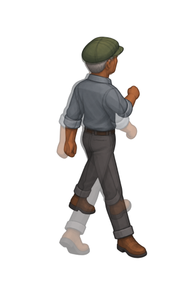

Uniform scale and body anchors. Original strip unchanged. Three frame boxes exceed the5percent requirement.
| Frame | Width error | Height error | Box pass |
|---|---|---|---|
| f0 | 1.4% | 0.3% | true |
| f1 | 11.3% | 2.1% | false |
| f2 | 15.1% | 2.1% | false |
| f3 | 13.0% | 0.0% | false |
f0 over f2 at50percent opacity:
